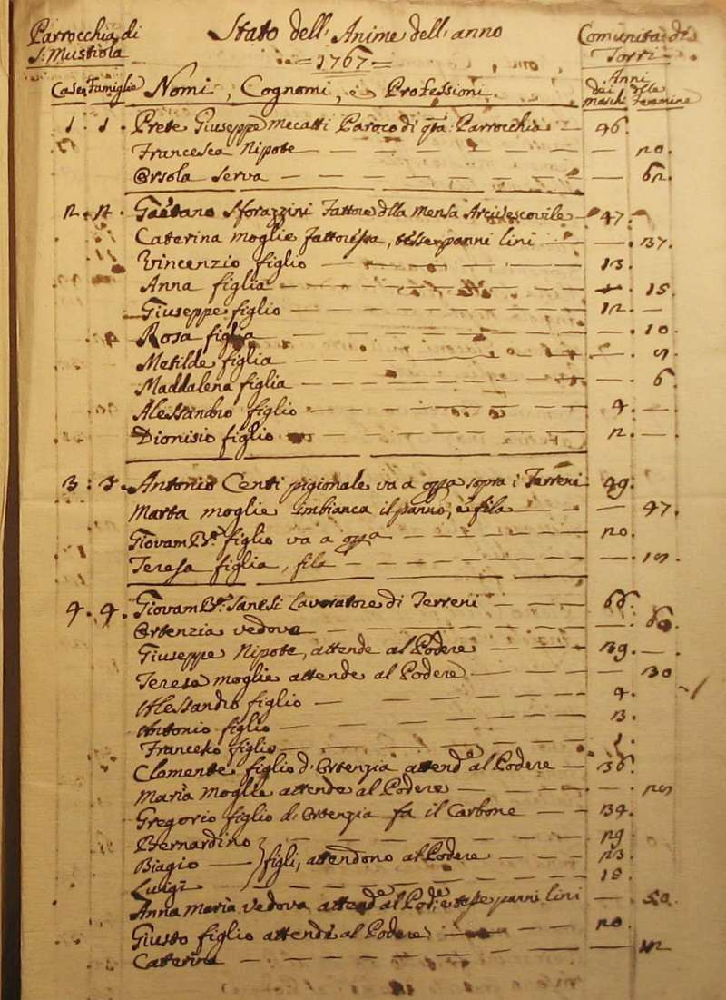
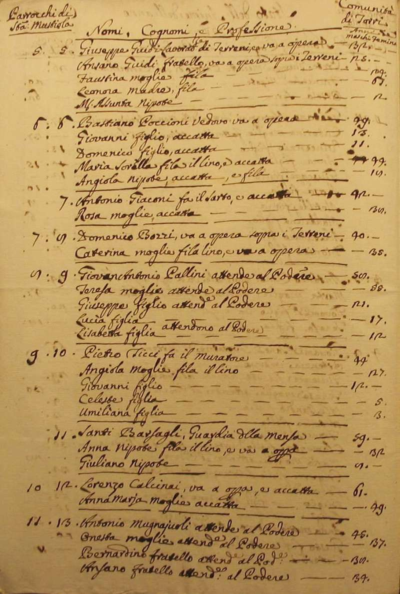
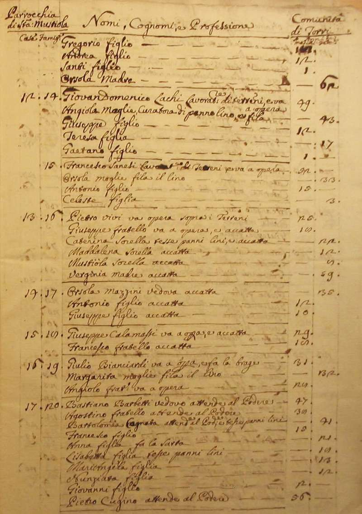
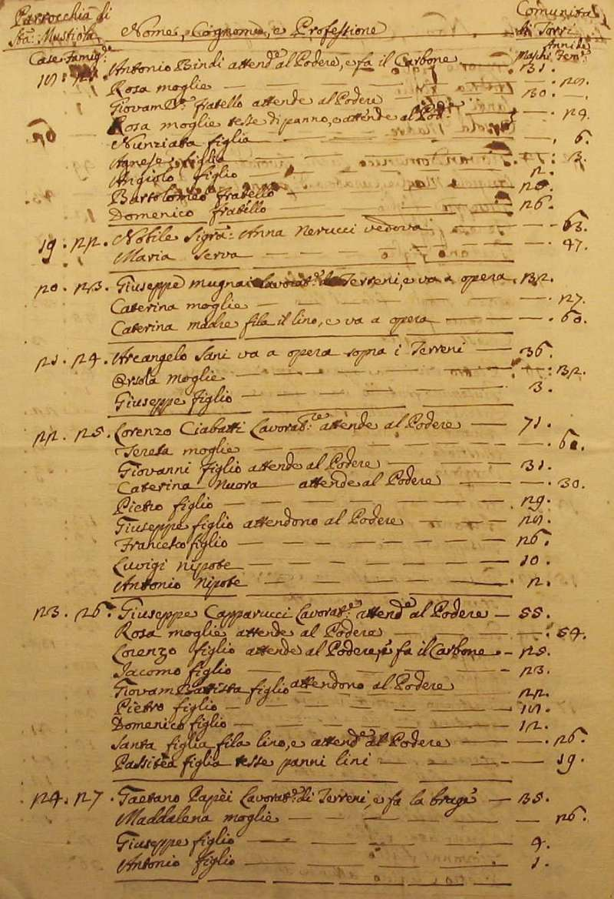
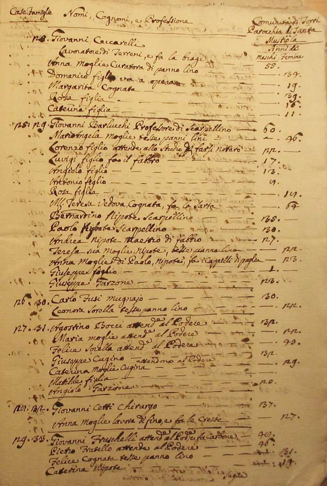
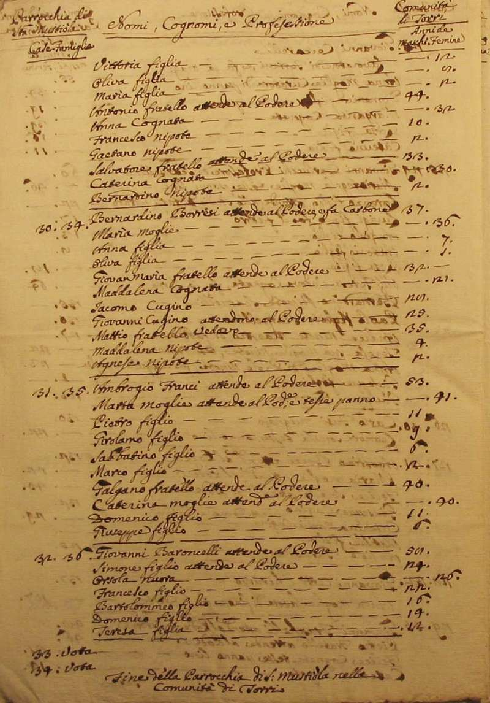

|
Ritorna all'indice delle parrocchie
Il numero abbinato ad ogni famiglia indica la relativa posizione nello Stato delle Anime
1 - Prete Giuseppe Mecatti - Paroco di questa Parrocchia
2 - Sforazzini Gaetano - fattore della mensa arcivescovile - 10
3 - Centi Antonio - pigionale va a opera sopra i terreni - 4
4 - Sanesi Giovanni Battista - lavoratore di terreni - 16
5 - Guidi Giuseppe - lavoratore di terreni va a opera
6 - Poccioni Bastiano - va a opera
7 - Giaconi Antoniuo - fa il sarto e accatta - 2
8 - Bozzi Domenico - va a opera sopra i terreni
9 - Pallini Giovan Antonio - attende al podere
10 - Ticci Pietro - fa il muratore
11 - Barsagli Santi - guardia alla mensa
12 - Calcinai Lorenzo - va a opera e accatta - 2
13 - Mugnaiuoli Antonio - attende al podere
14 - Lachi Giovan Domenico - lavoratore di terreni e va a opera
15 - Sanesi Francesco - lavoratore di terreni e va a opera
16 - Vivi Pietro - va a opera sopra i terreni
17 - Mazzini Orsola - vedova - accatta - 3
18 - Calamassi Giuseppe - va a opera e accatta
19 - Bianciardi Giulio - va a opera e fa la brage - 3
20 - Barbetti Bastiano - attende al podere - 10
21 - Bindi Antonio - attende al podere e fa il carbone
22 - Nerucci Anna - vedova - n. d.
23 - Mugnai Giuseppe - lavoratore di terreni e va a opera - 3
24 - Sani Arcangelo - va a opera sopra i terreni
25 - Ciabatti Lorenzo - lavoratore attende al podere
26 - Capparucci Giuseppe - lavoratore attende al podere
27 - Papèi Gaetano - lavoratore di terreni e fa la brage - 4
28 - Ceccarelli Giovanni - lavoratore di terreni e fa la brage - 6
29 - Barlucchi Giovanni - professore di scarpellino - 15
30 - Fusi Carlo - mugnaio
31 - Bocci Agostino - attende al podere
32 - Cetti Giovanni - chirurgo - 2
33 - Fruschelli Giovanni - attende al podere e fa carbone - 14
34 - Borresi Bernardino i - attende al podere e fa carbone
35 - Franci Ambrogii - attende al podere
36 - Baroncelli Giovannii - attende al podere






Torna ad inizio pagina
Ritorna all'indice delle parrocchie
| |

|